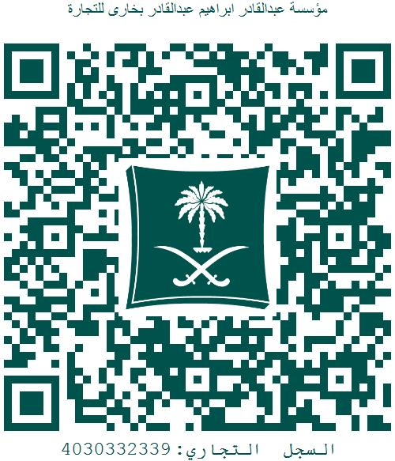

بخاري
Abdulqader Bokhari Est
Management, construction and
operation of marine anchors
الرقم الضريبي :
عقد رسو واسطة بحرية
انه في يوم (الاثنين) بتاريخ (30/12/2019 م) الموافق تم التعاقد بين كل من:
1. مؤسسة عبدالقادر بخاري لإدارة و تشغيل المراسي (طرف اول)
2. السيد: (اسامه عبدالقادر ازهر ) رقم الهوية (1005962608) رقم الجوال (0505509145) رقم جوال اخر ()
على استئجار الطرف الثاني موقف رسو واسطة بحرية في مرسى قرية القطان السياحية بمبلغ (17000) الاف ريال سعودي
سنويا
(تدفع على دفعتين) الدفعة الاولى (8500 ريال) مقدما شاملة قيمة الضريبة وذلك
عن الفترة من : (1/1/2020م )
الى :
(30/6/2020م )
اسم الواسطة (طيف الروز ) رقمها (20097) الطول (10.30م) العرض (3.00م )
شروط اوتعليمات لعقد
- يتم تخصيص الموقف باختيار ادارة المرسى ويحق للإدارة تغيير الموقف في أي وقت اذا دعت الضرورة لذلك.
- فترة الرسو هى المشار اليها اعلاه مالم يتفق الطرفان على غير ذلك كتابيا ولايتجدد العقد الا بموافقة مالك المرسى كتابة وفقا للبند20 من العقد.
- يجب على الطرف الثانى المحافظة على التقاليد والانظمة المتبعة فى المملكة والامتناع عن الافعال التى تسبب ازعاج او اضرار بالغير وبهدوء المرسى ويسرى هذا التعهد على المالك وتابعية وزواره خلال وجودهم بالمرسى ويكون مسؤول بالتعويض المباشر عما لحق بالمرسى من خسارة او ضرر يتسببون فيها.
- عند انتهاء الفترة المتفق عليها وفقا لنصوص هذا العقد ولم يقوم المالك بسحب الواسطة من المرسى خلال سبعة ايام يكون للمرسى الحق فى سحب الواسطة ووضعها فى المكان الذى يراه مناسبا ويترتب على مالك الواسطة دفع مائتان ريال رسوم اخراج الواسطة بالاضافة الى ايجار ارضية بمقدار مائتين ريال عن كل يوم.
- فى حال قام صاحب الواسطة البحرية بانهاء العقد قبل انتهاء الفترة المتفق عليها لا يحق له استرداد القيمة المتبقية من قيمة العقد.
- يتم تسليم ادارة المرسى مفتاح الواسطة البحرية وعمل تفويض للمرسى لتحريك الواسطة فى حالة الطوارئ او لأى سبب اخر يتطلب فيه تحريك الواسطة ويعتبر هذا البند بمثابة تفويض للمرسى من المالك.
- يلتزم الطرف الثانى بالمحافظة على البيئة وعدم القاء النفايات والمخلفات وغيرها في غير الاماكن المخصصة لها وفي حال مخالفته أو من معه سيتم حجز الواسطة في المرسى لحين دفع غرامة مالية لادارة المرسى مقدارها (500 ريال) .
- لايحق للطرف الثانى ترك الامتعة الشخصية وأمتعة الواسطة أو الصيد على الارصفة العائمة فى اى حال من الاحوال.
- يتعهد صاحب الواسطة بعدم استعمال الشوايات او مواقد الكيروسين داخل المرسى.
- يجب عدم ترك اشياء ثمينة داخل الواسطة ومنها على سبيل المثال لا الحصر اجهزة الملاحة ولا يتحمل المرسى اي مسؤولية تجاه اى تلفيات او سرقات لاقدر الله داخل المرسى ويسري ذلك على سيارة المالك او الزوار فى الاماكن المخصصة للوقوف.
- يتعهد صاحب الواسطة بالتعويض المباشر للمرسى عن اية اضرار او اصابات ناتجة عن اخطاء ارتكبها المالك بحق المرسى او المنتفعين.
- ممنوع منعا باتا على صاحب الواسطة ادخال او تخزين اى مواد بترولية او متفجرة او قابلة للاشتعال ويتحمل صاحب الواسطة المسؤولية كاملة فى حال المخالفة فضلا عن احقية ادارة المرسى ابعاده ومنعه من الرسو دون اى حق لصاحب الواسطة فى المطالبة لاى مبالغ قد دفعها للمرسى نظير العقد وفى حالة حدوث حريق لاقدر الله يكون صاحب الواسطة مسئوول مسؤولية مباشرة عن كافة الاضرار التى لحقت بالمرسى والاخرين.
- اذا خالف صاحب الواسطة القوانين والانظمة المعمول بها فى المملكة العربيه السعودية والاعراف المتبعة يكون مسئوول مسؤولية كاملة ومباشرة عما يرتبه ذلك من اضرار للمرسى او للغير.
- تكون الواسطة البحرية ضامنا لاى التزامات مالية للمرسى كمستحقات للمرسى او تعويض للغير،عندئذِ سيتم انذار مالك الواسطة بالحجز على الواسطة البحرية حتى سداد المستحقات دون ان يحق للمالك الاعتراض ، وفي حال ترك الواسطة دون سداد مستحقات المرسى عليه يحق للمرسى بعد انذار مالك الواسطة ومرور شهر دون سداد المالك للمستحقات التصرف فى الواسطة بالبيع بطريقة المزاد العلنى لآعلى سعر يعرض باول جلسة للمزاد وخصم المستحقات وارجاع ماتبقى من القيمة (ان وجد).
- فى حالة قيام مالك الواسطة ببيعها للغير عليه ابلاغ المرسى بخطاب قبل اتمام البيع للغير كما يحق لادارة المرسى عند البيع للواسطة فسخ العقد في حال كان المشترى شخص غير مرغوب فيه من جهة ادارة المرسى أولا يرغب التعامل معه ولايحق لصاحب الواسطة الاعتراض على ذلك .
- لايحق للطرف الثانى تقبيل موقف رسو الواسطة اوالتنازل عنه للغير.
- فى حالة مخالفة اى بند من بنود العقد يحق لادارة المرسى الغاء العقد واخراج الواسطة من المرسى دون الرجوع للطرف الثانى.
- فى حالة وجود الواسطة تحت بند التاجير يلتزم الطرف الثانى بنظام تأجير الوسائط البحرية المتبع فى المرسى (المتمثل في استقطاع 30% من قيمة الإيجار) وعدم التحدث مع زوار المرسى والرجوع الى شباك التذاكر ومخالفة ذلك يحق لادارة المرسى ايقاف الطرف الثانى عن التاجير واخراج الواسطة خارج المرسى والغاء العقد اذا لزم الامر كما يلتزم مالك الواسطة بالتقيد بتعليمات وزارة الداخلية الممثله في حرس الحدود بأن يتم التأجير عن طريق إدارة المرسى وتحت مسئوليتها وذلك للقوارب المخصصة للتأجير.
- يقر كل طرف بان العنوان الموضح بصدر العقد هو المعتد به حال المخاطبات بينهما
- مدة هذا العقد المصرح خلالها بالرسو لهذه الواسطة هي سنه هجرية ولا تجدد إلا بعقد جديد وبعد انتهاء المدة او اى مدة مجددة يحق لمالك المرسى سحب الواسطة ورفعها بمصروفات على عاتق الطرف الثانى الذى يقر بموافقته على ذلك وبالتزامه بسداد مصروفات الرفع دون ان يكون له حق الاعتراض على ذلك مستقبلا ويتم رفع الواسطة بعد ثلاثة ايام من تاريخ انتهاء العقد او المدة المجددة دون الرجوع لمالك الواسطة بشئ بهذا الخصوص.
- لا يجوز لغير مالك الواسطة استعمالها بغير تفويض رسمي من حرس الحدود وبعد الحصول على التصاريح والتراخيص التى تؤهلة لذلك ويتحمل فى هذه الحالة مالك الواسطة متضامنا مع من يسمح له باستعمال الواسطة الاثار التى قد تترتب على اى مخالفات او الاضرار للمرسى او للغير كذا يتحملا متضامينين لاى مخالفة للنظم المعمول بها فى المملكة.
- فى حالة تأخر مالك الواسطة فى سداد القيمة الإيجارية المحددة بالعقد وبنهاية الفترة المسددة عنها الايجار يكون لمالك المرسى الحق في تغريمه (500 ريال) عن كل شهر تأخير كما يحق لإدارة المرسى رفع الواسطة بمصروفات على عاتق الطرف الثانى ويقر الطرف الثانى على موافقتة هذا البند دون اعتراض ومهما كانت المبررات.
- في حال عدم التزام الطرف الثانى او اى من المستأجرين للنظام او العرف والتقاليد اواحداث اى مشاكل بالمرسى يكون من حق صاحب المرسى اخطارة خلال اسبوع بانهاء العقد ورد ماقد يكون قد سدده من مقدم ولا يحق للطرف الثانى الاعتراض على ذلك.
- يجب ان يكون الاطفال فى جميع الاحوال بصحبة شخص بالغ سن الرشد وتحت مسؤوليته.
- يمنع منعا باتا السباحة واللعب فى الارصفة والممرات .
- يجب ان تتحرك الواسطة ببطئ داخل المرسى بسرعة لا تتجاوز عقدة واحدة.
- فى حالة نشوب خلاف بين طرفي العقد يطبق التحكيم وفقا للأنظمة المعمول بها في المملكة العربية السعودية.
- يجب تجهيز الواسطة بأدوات السلامة وأجهزة اطفاء الحريق وكافة اشتراطات وزارتي الداخلية والمواصلات.
- لا يحق لمالك الواسطة جلب اي عمال لعمل اي صيانة للواسطة داخل المرسى الا بموافقة خطية مسبقة
- تم تخصيص عدد ستة مواقف للتحميل والتأجير ويمنع الوقوف بها لأكثر من عشرة دقائق كما يمنع منعا باتا دخول اي شخص لممرات المرسى سوى مالك الواسطة او الشخص المفوض رسميا بذلك، وعلى التابعين الإنتظار في منطقة التحميل، وفي حال مخالفة ذلك سيفرض المرسى على المستأجر غرامة مالية بقيمة 500 ريال.
- تسري تعليمات وانظمة الجهات الرسمية ومنها وزارة الداخلية ، وزارة الزراعة، حرس الحدود بخصوص تعليمات الصيد ومنها منع استخدام البنادق والشوارات و المخادج والقراقير والأسماك الممنوع صيدها.
- يمنع الصيد منعا باتاً داخل المرسى وامام قرية القطان السياحية بمسافة 500 متر على الأقل عن القرية.
- حرر هذا العقد من نسختين اصليتين واستلم كل طرف نسخة للعمل بموجبها.
مستثمر مرسى قرية القطان (
مؤسسة: عبدالقادر إبراهيم بخاري) س ت : 4030332339 جوال : 0590123466 – 0502043204
البريد اﻹلكتروني : alqattan.marrine@gmail.com
مؤسسة عبدالقادر بخاري
لإنشاء وادارة وتشغيل المراسي

الختم
مستثمر مرسى قرية القطان (
مؤسسة: عبدالقادر إبراهيم بخاري) س ت : 4030332339 جوال : 0590123466 – 0502043204
البريد اﻹلكتروني : alqattan.marrine@gmail.com